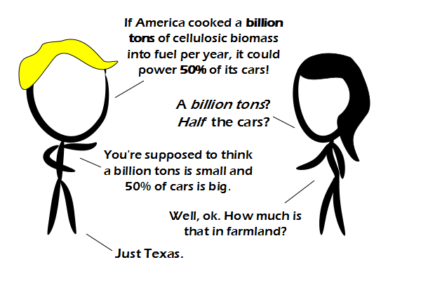

Comic JK 772
When I Feel Like It
⇤
<
?
>
⇥

⇤
<
?
>
⇥
Forum
.
RSS
.
Digg
.
Facebook
.
Reddit
.
Twitter
.
Stumbleupon
Enter your thoughts on number 772 here. Please, no spamming, trolling, or turning Texas into farmland and making everyone move. >It's not really even that plausible; there's no water in West Texas >> Re-route the Mississippi River through West Texas. Problem solved! Jeez, you're realllllly against our current types of biofuels, aren't you?! >He's just putting everything he's learning at his PhD into comics. Wait till his second semester, when he learns, that everything he's been taught so far is wrong... >>Nice. >>> so instead of being an xkcd spoof, we get a phd comics spoof? >>Wait, he's doing an Econ PhD? >>>Everything is economics. Just ask any politician's economics advisor. >>>Why WOULDN'T any SANE person be against current biofuels? They're a JOKE, propped up by the oil and corn industries out of fear that real change might otherwise happen. <<ignorant person that doesn't know biofuels are actually good <<< REALLY ignorant person who thinks that a barrel of biofuel that requires a barrel of oil to make AND increases the cost of food to the world's poorest is somehow "green" Wait, WHAT? Why do you want the people in Texas to move!?!? That would mean there would be even more of them for non-Texans to deal with! >... I don't think the Texans are supposed to move. >>Regardless, I don't want to loose support for my CAS. >>>me too >>>Don't worry, nobody will be loosening anything, especially not support. Why not just make cars intended to use biofuels? That would mean their use of them would be more efficient... >The 50% figure assumes the cars can use biofuels >> We already have cars that run on biofuels. They're called horses. And you can find a lot of them in Texas. >>> But can they keep up with the 85 mph speed limit? >>>> Of course they can. I've never seen a horse faster than that. >>>>> Take the funding for biofuel research and use it for research on genetically engineering super fast horses. >>>>>> "We've put 10 billion dollars to create horses that can break the speed limit." Great! >>>>>>>( but we can't catch them... ? ) Zip lines from tall buildings! Everywhere! And elevators to the top. That'd be the most efficient method of transportation. The motors powering the elevators would all be stationary and electric. And in places where the traffic is worst they already have the tall buildings. Seriously, what the hell is this shit?